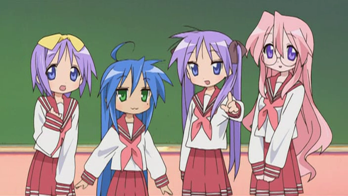

Lucky Star (らき☆すた) is a Japanese four-panel comic strip mange by Kagami Yoshimizu. It focuses on the daily lives of four highschool girls (Joshi Kosei).
The main character is Konata Izumi, a otaku girl who uses most of her time watching anime and playing online games. While being lazy, she is a most intelligent and athletic girl.
Another main character is Kagami Hiragi, a hard-working girl elected class president in her first year. Although she is in the different class than Konata, she usually come to have launch together with Konata.
The Lucky Star anime was produced by Kyoto Animation and aired in 2007. It was well received and is considered a milestone in anime industry.